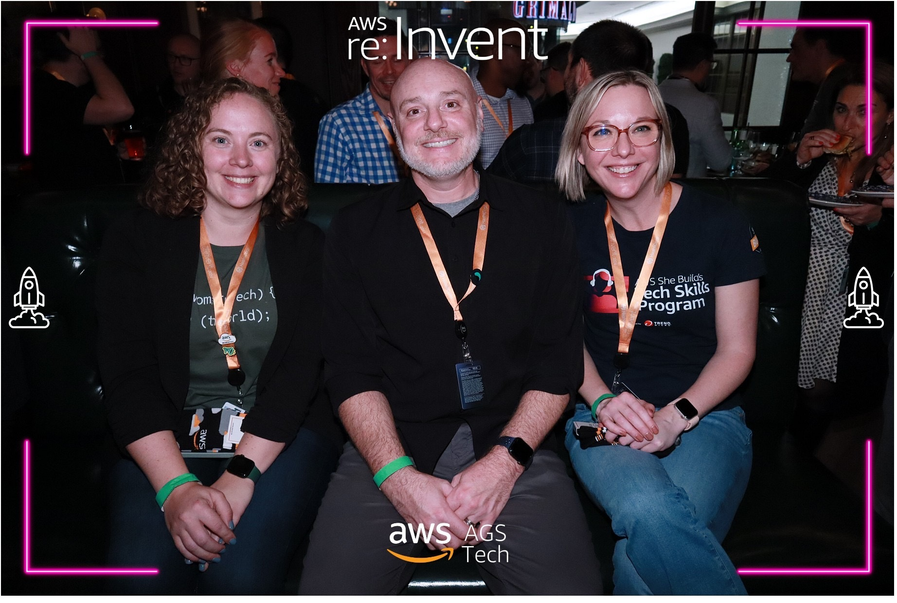

Livestream Appearances & Video Content
Featured appearances across AWS She Builds, Kiro Weekly, and AWS data shows showcasing AI-powered development and developer productivity
From summer through fall 2025, I served as livestream manager for AWS She Builds, coordinating episode topics and scheduling guests. Over the course of three years at AWS, I appeared on numerous episodes showcasing women builders and their innovative solutions. Episodes aired on AWS She Builds, AWS Events YouTube, and twitch.tv/aws. Featured below are episodes where I interviewed guests or demonstrated technical solutions.
AWS She Builds Episodes
45-Minute Tech Portfolio Build with Kiro
A fast and practical live demo building a complete technical portfolio from scratch using Kiro. Covers real-world AI-assisted development patterns, showing how Kiro accelerates the full build cycle in under an hour.
Saddle up for success: inside the ReArchitecture Rodeo at re:Invent 2025
Join us for an inside look at the ReArchitecture Rodeo at re:Invent 2025, where builders tackle real-world architecture challenges and modernization scenarios.
Supercharge Machine Learning Development: Amazon Q Developer's Agentic AI in SageMaker Unified Studio
Discover how Amazon Q Developer's agentic AI capabilities transform machine learning workflows in SageMaker Unified Studio, accelerating development and improving productivity.
Context Engineering: Building Context-Aware AI Agents with Amazon Bedrock AgentCore Memory
Explore context engineering techniques and learn how to build context-aware AI agents using Amazon Bedrock AgentCore Memory for more intelligent and responsive applications.
Custom agents in Q Developer: Transforming app development
This episode dives into custom agents in Amazon Q Developer and how I use them across the SDLC. Custom agents are one of my favorite features of Amazon Q Developer and I think the area of intelligent agents in general is super interesting.
AWS re:Invent 2025 Session Preview: Women Speakers Showcase GenAI, Security, & Data Analytics
Jane Ridge and I host an exclusive re:Invent 2025 session preview featuring 5 women speakers pitching their must-attend sessions in lightning presentations. Watch for previews of talks on generative AI architecture, multi-agent data pipelines, security innovations, Q Developer CLI, and Builders Fair insights.
Amazon Q Family Power Hour: One Hour, Three GenAI Game-Changers
Jane Ridge, Priyanka Sadhu, and I explore the Amazon Q Family: three AI assistants that revolutionize coding, knowledge access, and data analysis. We show how Q Developer accelerates development by 57%, Q Business unlocks organizational knowledge, and Q for QuickSight democratizes data insights through natural language queries.
From Vulnerable to Resilient: AWS Backup for Ransomware Defense
I interview Principal Specialist Solutions Architect Fathima Kamal as she demonstrates AWS Backup's advanced security features for ransomware protection, covering immutable backups, air-gapped storage strategies, and real-world recovery scenarios.
Supercharge your AI Agents: Secure, Scale, and Succeed with Amazon Bedrock AgentCore
Early deep-dive into Amazon Bedrock AgentCore, recorded one week after its New York Summit announcement. Features service overview and hands-on observability demo with the AWS GenAI team.
MCP Revolution: AWS Team's Journey from Internal Tools to Open Source AI Infrastructure
I interviewed members of the AWS PACE team as they detail their journey with MCPs and making over 30 (and growing!) open-sourced MCP servers.
From Code Pipelines to AI Agents: Clare Liguori's Tech Odyssey
Interview with AWS Senior Principal Engineer Clare Liguori exploring the evolution of DevOps and introducing Strands, an open-source SDK for building autonomous AI agents with model-driven architecture.
Watch Me Build Part 2: Design-driven UI with Amazon Q Developer
As a follow up to the previous episode (which was only mildly successful) I leaned into design-driven development with Amazon Q Developer. This episode shows how to move beyond "vibe coding" to create more intentional, user-focused applications with AI assistance.
AWS She Builds Tech Skills: Watch me build with Amazon Q Developer!
Brittany and I demonstrate building a React frontend for a Java backend using Amazon Q Developer CLI, showing real-time AI-assisted development in action.
Other Livestream Appearances
Ship Quality Code with Kiro
Join the Kiro Weekly show to explore how Kiro helps developers ship quality code faster with AI-powered assistance, automated testing, and intelligent code review capabilities.
Building Full-Stack Apps with AI: From Conversation to Production Code
Guest appearance on AWS Let's Talk about Data discussing how AI transforms the full-stack development process, from initial conversation to production-ready code using Kiro and modern development practices.
Where to Find Episodes
🎥 AWS She Builds
Main community channel featuring regular episodes and community highlights
Visit Channel📺 AWS Events
Recent episodes (summer 2025+) are published on the AWS Events YouTube channel
AWS Events
With the AWS She Builds community at re:Invent